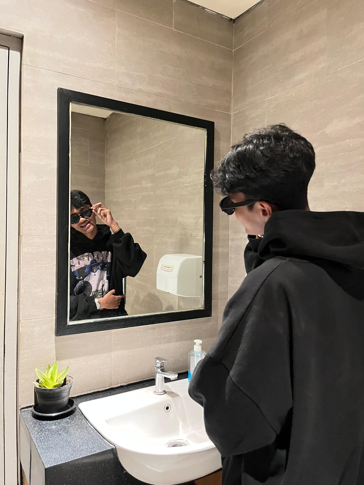

Saya adalah mahasiswa Teknik Informatika semester 8 yang memiliki ketertarikan mendalam pada pengembangan antarmuka web (Frontend), desain grafis, dan editing video. Saat ini sedang berfokus menyelesaikan tugas akhir skripsi saya.
Membangun website yang cepat, interaktif, dan responsive menggunakan HTML, CSS, JavaScript, serta framework modern. Menitikberatkan kerapihan kode dan optimasi performa.
Merancang identitas visual, mockup antarmuka pengguna (UI/UX), dan materi promosi kreatif menggunakan alat bantu seperti Figma, Adobe Photoshop, dan Illustrator.
Mengolah rekaman video mentah menjadi karya visual sinematik dengan pacing yang baik, color grading yang sesuai, serta desain audio yang dramatis di Premiere Pro.